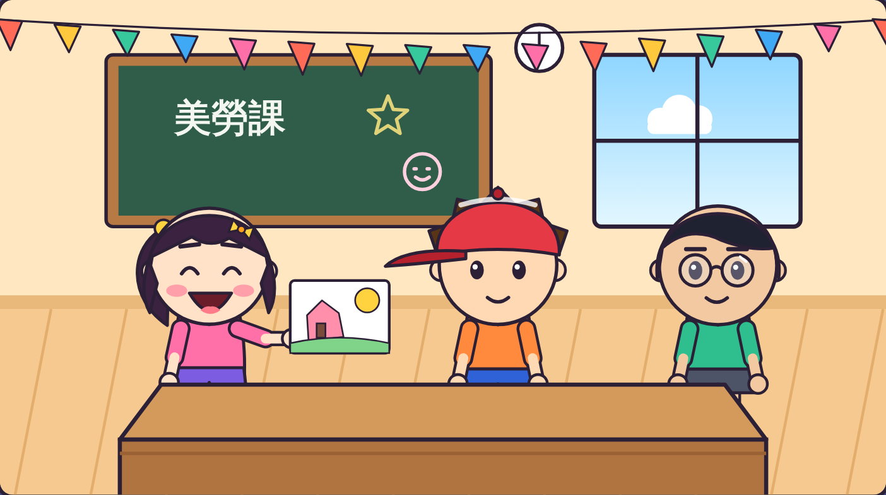
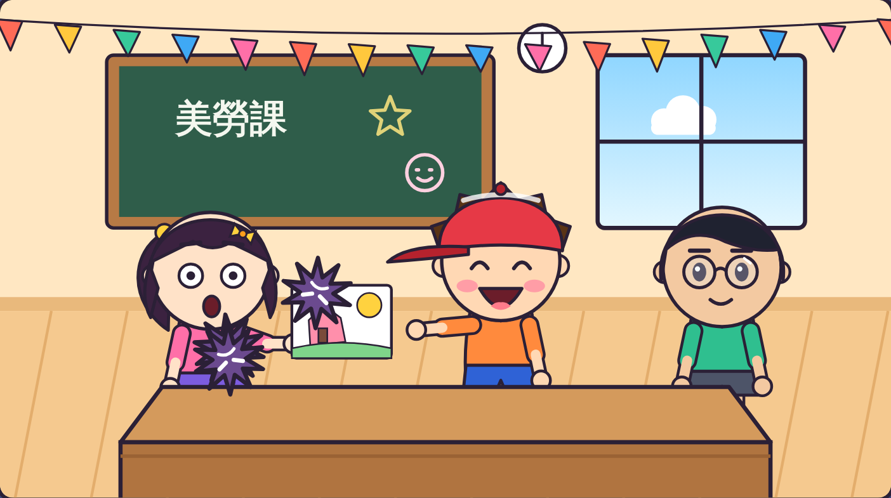
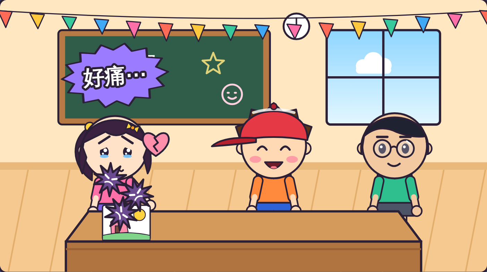
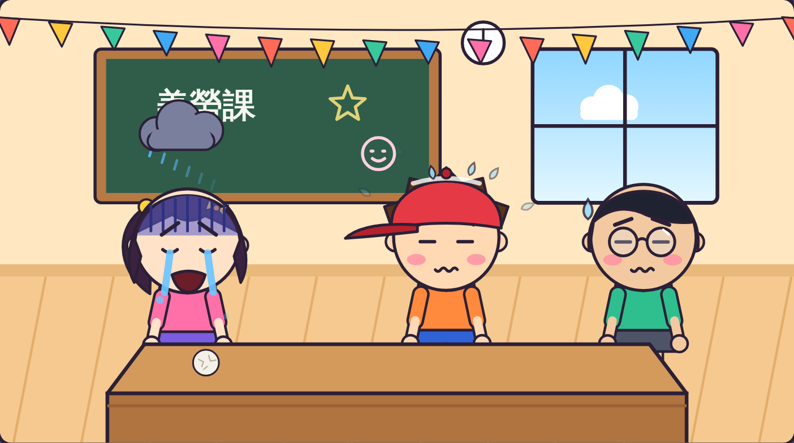
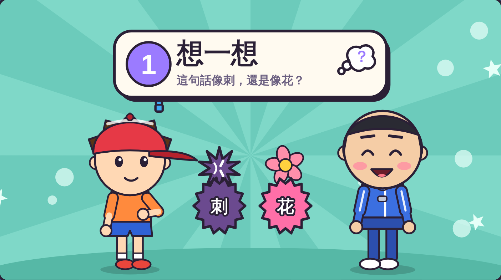
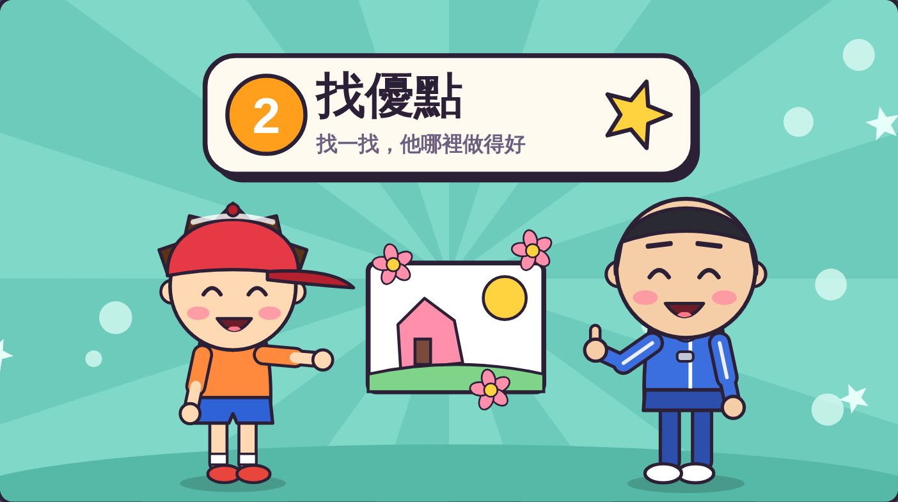
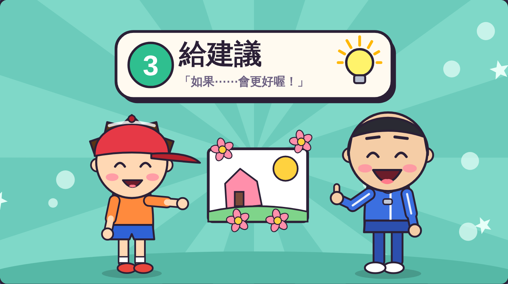
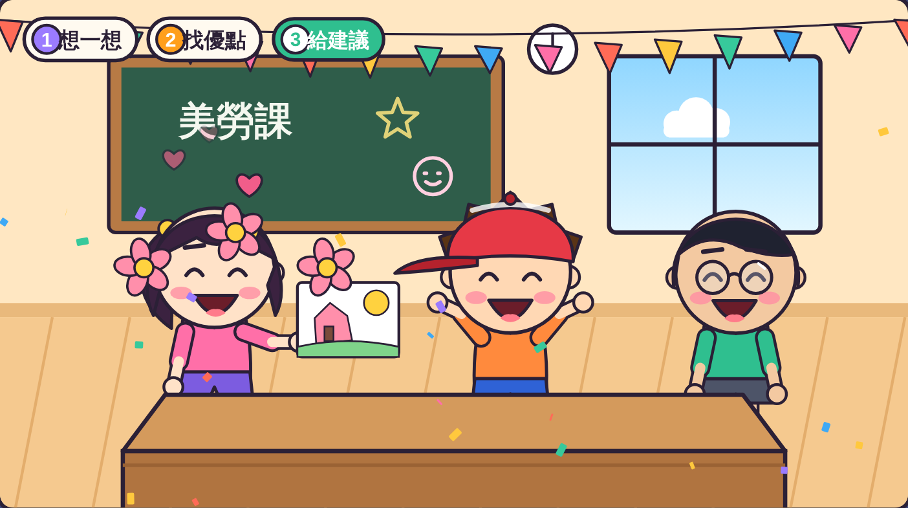
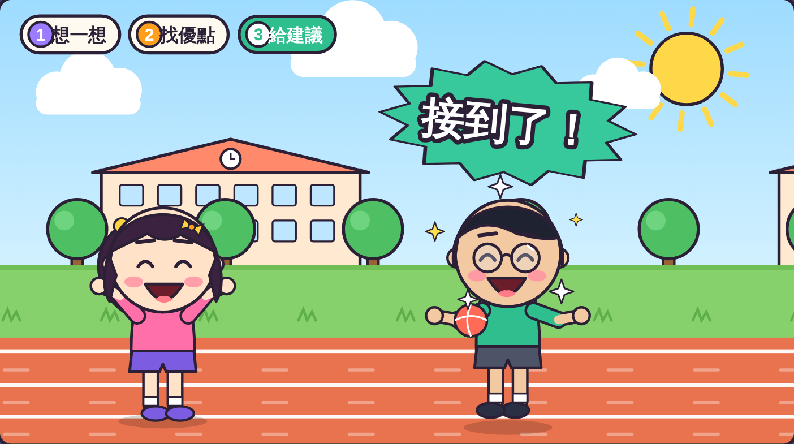

虎尾小劇場｜三年級資源班
1
會刺痛別人的心。
2
想一想、找優點、給建議。
虎尾小劇場｜不批評，我會找優點
想一想
別人說了什麼？
你心裡覺得怎樣？
你有批評過別人嗎？

虎尾小劇場｜不批評，我會找優點

「好醜喔！
像小寶寶畫的！」

刺刺到了小安的心，
她好難過。
虎尾小劇場｜不批評，我會找優點
小安把畫
揉成一團。

小安說：
「我再也不要畫畫了。」
虎尾小劇場｜不批評，我會找優點
1
像刺還是像花
2
他哪裡做得好
3
「如果⋯會更好」
第 1 步

這句話說出去，
像刺，還是像花？
像刺 → 先不要說
像花 → 可以說
刺還是花？
虎尾小劇場｜不批評，我會找優點
第 2 步

「你的太陽好亮，
顏色好溫暖！」
找一找，
他哪裡做得好。
找優點！
虎尾小劇場｜不批評，我會找優點
第 3 步

「如果房子再畫直一點，
會更漂亮喔！」
句子裡有
「如果⋯會更好」。
給建議！
虎尾小劇場｜不批評，我會找優點

小安說：「謝謝你！
我下次試試看！」

小安鼓勵阿凱，
阿凱接到球了！
虎尾小劇場｜不批評，我會找優點
老師抽一張情境卡，用三步驟說像花一樣的話。
情境 1
情境 2
情境 3
虎尾小劇場｜不批評，我會找優點
一起念口訣
想一想，
找優點，
給建議，
說話要像花！
打開「不批評挑戰題」，
回答 8 個問題。
8 題
虎尾小劇場｜不批評，我會找優點